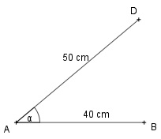

Aufgabe 53 Ein Tennisplatz ist ungefähr 24 m lang. Ein Mädchen sitzt im Wohnzimmer eines Hauses 1,5 m von einem 1,1 m breiten Fenster entfernt. Wie weit darf das Haus vom Tennisplatz entfernt stehen, wenn das Mädchen die komplette Platzlänge überblicken will.  Die Dreiecke DCG und BCF sind ähnlich, weil sie in 2 Winkeln übereinstimmen. CD = 1,5 m, DG = 1,1 m, BF = 24 m. 24 m Ähnlichkeitsfaktor k = -------- 1,1 m BC k = ----- |*DC DC BC = k * DC 24 BC = ------ * 1,5 m = 32,7 m 1,1 BD = BC - 1,5 m = 32,7 m - 1,5 m = 31,2 m oder Strahlensatz: BC = BD + DC BF BC ------ = ----- DG DC Über Kreuz multipliziert: BF * DC = DG * (BD + DC) 24 * 1,5 = 1,1 * (BD + 1,5) 24 * 1,5 = 1,1 * BD + 1,1 * 1,5 |-1,1 * 1,5 1,1 * BD = 22,9 * 1,5 |:1,1 BD = 31,2 m oder 24 : 1,1 = (BD + 1,5) : 1,5 Inneres Produkt = äußeres Produkt 1,1 * (BD + 1,5) = 24 * 1,5 |:1,2 24 * 1,5 BD + 1,5 = ----------- |-1,5 1,1 BD = 31,2 m